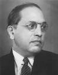

Dr. BR Ambedkar
- By Yukesh LS
About:
Bhimrao Ramji Ambedkar, venerated as Babasaheb, was an Indian jurist, economist, politician and social reformer, who inspired the Dalit Buddhist movement and campaigned against social discrimination towards the untouchables.

Who is AMBEDKAR:
Ambedkar was a prolific student, earning doctorates in economics from both Columbia University and the London School of Economics, gaining reputation as a scholar for his research in law, economics and political science. In his early career, he was an economist, professor, and lawyer. His later life was marked by his political activities; he became involved in campaigning and negotiations for India's independence, publishing journals, advocating political rights and social freedom for Dalits, and contributing significantly to the establishment of the state of India. In 1956, he converted to Buddhism, initiating mass conversions of Dalits.
Early Life of Ambedkar:
Ambedkar was born on 14 April 1891 in the town and military cantonment of Mhow (now officially known as Dr Ambedkar Nagar) in the Central Provinces (now in Madhya Pradesh). He was the 14th and last child of Ramji Maloji Sakpal, an army officer who held the rank of Subedar, and Bhimabai Sakpal, daughter of Laxman Murbadkar. His family was of Marathi background from the town of Ambadawe (Mandangad taluka) in Ratnagiri district of modern-day Maharashtra. Ambedkar was born into a Mahar (dalit) caste, who were treated as untouchables and subjected to socio-economic discrimination. Ambedkar's ancestors had long worked for the army of the British East India Company, and his father served in the British Indian Army at the Mhow cantonment. Although they attended school, Ambedkar and other untouchable children were segregated and given little attention or help by teachers. They were not allowed to sit inside the class. When they needed to drink water, someone from a higher caste had to pour that water from a height as they were not allowed to touch either the water or the vessel that contained it. This task was usually performed for the young Ambedkar by the school peon, and if the peon was not available then he had to go without water; he described the situation later in his writings as "No peon, No Water". He was required to sit on a gunny sack which he had to take home with him.
Ramji Sakpal retired in 1894 and the family moved to Satara two years later. Shortly after their move, Ambedkar's mother died. The children were cared for by their paternal aunt and lived in difficult circumstances. Three sons – Balaram, Anandrao and Bhimrao – and two daughters – Manjula and Tulasa – of the Ambedkars survived them. Of his brothers and sisters, only Ambedkar passed his examinations and went to high school. His original surname was Sakpal but his father registered his name as Ambadawekar in school, meaning he comes from his native village 'Ambadawe' in Ratnagiri district. His Devrukhe Brahmin teacher, Krishnaji Keshav Ambedkar, changed his surname from 'Ambadawekar' to his own surname 'Ambedkar' in school records
The Constitution
A constitution is an aggregate of fundamental principles or established precedents that constitute the legal basis of a polity, organisation or other type of entity and commonly determine how that entity is to be governed. The Constitution Of India is written by Dr. BR Ambedkar
DEATH:
Since 1948, Ambedkar suffered from diabetes. He was bed-ridden from June to October in 1954 due to medication side-effects and poor eyesight. His health worsened during 1955. Three days after completing his final manuscript The Buddha and His Dhamma, Ambedkar died in his sleep on 6 December 1956 at his home in Delhi.
To see more about Ambedkar, click Here.
To see more about Constitution of India, click Here.
Thank You for visiting my Website.